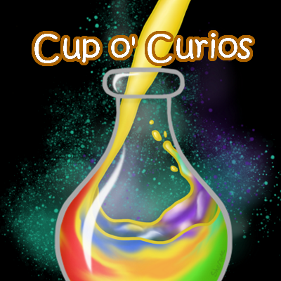
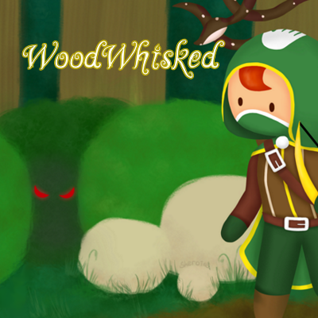
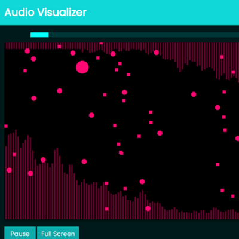
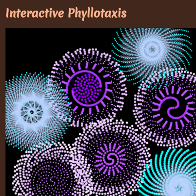
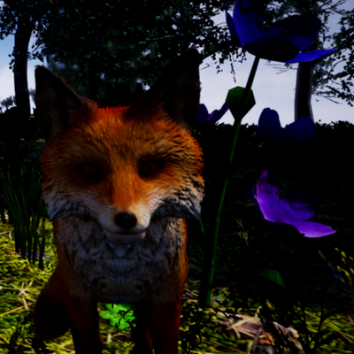

Cup o' Curios

Cup o' Curios is a game prototype about finding the right combinations of ingredients to make the right
potions for customers. It takes after various cooking games like Diner Dash, and mainly inspired by the Cook
Serve Delicious series.
Nov - Dec 2020
Cup o' Curios

More about the game
This game prototype was done in a little more than a month. It's setting and mechanics are based on the
Dresden Files univserse, specifically how potions are made in that universe as our game is about making
potions.
Players would have to guess the right ingredient combinations to make potions requested by their
customers based on the attributes and nature of provided ingredients and requested potions.
It will be confusing to start when the player is still trying to find the potion recipies. But once the
player gets them, it's all about speed and memory, to serve as many customers as possible to earn lots
of money by the end of the day. Then try to break their own highest records of cash earned.
My work
This project is a group academic project of 4 people: Patrick Mitchell, Camilo Lima, Rhys Stever, and me. I was responsible for making all of the art and assets for
this project, then implementing them as spritesheets in Unity.
We were required to submit box art for our prototype even if it's PC only. So we were allowed to choose
a different platform that does distrubute games with physical boxes and design one for that, thus a PS4
box art for our PC game.
There are 24 ingredient types on the table, and they each have their own "piece image" asset that
appears in the mixing bowl. The stirred mixture is a white and grey image placed in between the front
and back of the bowl assets, then tinted in game to reflect the type of potion made by the player. The
table is made with help of texture stamps to reflect their material types.
The customers all have the same figure, in the same cloak with different colors, then mix and matched 4
types of skin color, hair styles, and eyes. This was done because I was running out of time to make more
varied assets by the end of the project, so we had to settle with similar looking customers instead of a
diverse cast. The cloak also unfortunately wasn't the best clothing style for this game's people, since
the Dresden Files universe is set in the modern US.
The menu art was based on the idea that this potion shop the player runs is located underground. So I
imagined that the shop is in some secret underground facility with a bunch of corridors, where other
magic users could rent out the rooms provided there and do whatever they please. And the menu art is the
door to the shop, with it's name and some art spray painted onto the wall and door directly.
It was really hard to find reference images that had indoor storefronts that don't have any windows,
since we decided that the shop wouldn't have windows for being underground. Or just underground
facilities that had the right feel or elements I wanted to find in general. I found exactly 1 image of a
door to a bar down a corridor with minimal wall art that expressed some liveliness and gave me the right
vibe for an underground society that isn't abandoned.
A rainbow potion being poured into a bottle while magic is shoved into it, depicted by the cyan and
purple particles and aura, is the design of the box art. The idea of "rainbow potion being poured into a
bottle" was suggested by Patrick since it is a simplier design, and because he saw that I was
struggling to keep up with my projects piling up by the end of the semester. I didn't have my own design
thought of either, and was frankly getting burnt out due to the end of semester crunch. So I took that
suggestion, added some magic to it since it's a big part of our game, and managed to make it look great
in the end. I also have to admit, liquid surfaces are quite the challenge to shade.
All the art is done using Krita.
WoodWhisked

WoodWhisked is a game prototype about a theurgist hunter finding their way out of a magical forest after
getting transported deep into it. It's main inspration is from Rust Bucket.
October 2020
WoodWhisked
More about the game
This game prototype was done in a month. It's setting and mechanics are based on the Ethshar universe,
specifically theurgy as the form of magic that the player character uses, and the treesquid as an enemy,
which is a cannonical creature in the Ethshar universe.
WoodWhisked is a tile based, casual adventure puzzle game. Players would have to navigate to the end
tile, which is a cyan colored rune, to complete the level and proceed to the next. Along the way there
would be enemies, like the boar and the treesquid, that would hurt the player on contact and restart the
level. Players would have to utilise their remaining arrows from their hunting trip, and their theurgy
abilities to safely navigate the forest and reach their end goal.
Our game is also turn based, where enemies will not make their turn until the player does, therefore the
player can take their time to think of their next moves, and observe enemy behaviour and movement
patterns. Boars will move 1 tile every 2 turns and try to ram into the player, while the tree squid is
stationary. Originally it was planned that the treesquid would hide in their tree until the player gets
close enough, then attack the player when they are in the tiles adjacent to the tree. However we ran out
of time to implement that.
Currently we have implemented 4 levels, 2 enemy types, shooting arrows, and 1 theurgy ability. There
were more enemies and theurgy abilities planned during development, but we weren't able to implement all
of them due to the time constrain. Entities are also unfortunately unanimated.
My work
This project is a group academic project of 4 people: Patrick Mitchell, Camilo Lima, Rhys Stever, and me. I was responsible for making all of the art and assets for
this project, then implementing them as spritesheets in Unity.
We were required to submit box art for our prototype even if it's PC only. So we were allowed to choose
a different platform that does distrubute games with physical boxes and design one for that, thus a PS4
box art for our PC game.
All the tiles in the game are 64px squares. Grass and path tiles all connect with each other seamlessly.
The flora consists of 2 types of trees, tree stumps, fallen logs, and bushes. Due to the time constrain,
and this being a prototype, these tile assets are rather simple and has no shading done on them so I
could save time and get them done as quickly as possible.
The entities have more detail though, especially the player character, where their design has to reflect
that they are a theurgist hunter. The white handprint on their hood and quiver, alongside the gold trim
of their robe are what theurgists wear in the Ethshar universe. Though as a hunter, they would have to
blend into the environment as well, thus their robe being green instead of white. The player character's
design was a fun mix and match of 2 roles and their respective attire and symbols.
Rune tiles were designed with reference to magic circles and rune symbols. The end tile had a bunch of
symbols drawn in it that mostly relate to "teleportation", "nature", "wind", and "home". That's because
the player character wishes to find their way out of the forest and back home, and a change of location
(to next level) suggests teleportation of some sort. The green "pressure plate" rune was mostly designed
on the idea of an eye, where it's like something is awakened and it opens its eyes. But since it's a
rune, they are drawings or inscriptions, so the eye doesn't open or close, but the glowing parts reflect
its current state instead.
Ability icons on the top left have 2 different outline colors because of their different nature. Using
your bow and arrow is a normal physical skill, so it has a plain black outline. While the leap ability,
along with 2 other unimplemented abilities, have a light yellow outline that has a bit of an inner glow
to show that they are theurgy abilities and relating to magic.
The buttons were also designed by me, and they are a 9-sliced sprite. They are designed to look fancy,
are green and gold to reflect the player character's robe colors, and look like vines of a sort due to
the game's setting in a magical forest.
The menu art is of the forest the player character is situated in: a dense and mysterious forest. The
box art features the player, a hidden treesquid, and an unimplemented enemy called a mizagar, where only
its red menacing eyes are seen. Mizagars are another cannonical creature in the Ethshar universe, and
would have been a great and challenging enemy to face, but as mentioned above, we didn't have the time
to implement it, so I added it to the box design as an homage.
A mizagar is said to be really hard to detect, and nearly invisible at night, therefore only their eyes
were drawn in the design. Humans are also their preferred food, thus I made the eyes menacing, to show
that they are a threat to the player character. While the mizagar isn't in our prototype, having it in
the box art as a lurking danger better reflects the tone and mood of our game, and letting potential
consumers know what they're getting into whie looking at the game box to decide whether or not to buy
it.
One small unfortunate note about the box art though, I was rushing to complete it and in the heat of it
forgot to add the game name to the spine.
All the art is done using Krita.
Audio Visualizer / Just Visuals and Audio

We were tasked to make an audio visualizer for this project, where users can control some of the visual and
audio effects. Then we decided to gamify it, and make it play similar to the game Just Shapes and Beats.
Feb - Mar 2020
Audio Visualizer / Just Visuals and Audio
More about the project
Currently there are 3 tracks for selection, and each track has differnet visual elements. Visual
elements include poppers, blips, moving Bezier curves, and audio data.
Bars are used to present audio data, and users can pick between viewing the music's frequencies or
waveform. It is shown on all 3 tracks, is behind and slightly dimmer than other visual elements.
Poppers will constantly bounce around the screen, their size changes with a randomly selected frequency
data node, and if cooldown is up they will pop and spawn blips if the frequency is high enough or if the
previous value has large enough of a different than the current one.
Blips are just small circles or squares that move across the screen in a single direction and speed
until they move off screen, then they disappear.
Moving Bezier curves can be either a regular Bezier curve or a quadradic Bezier curve. Their start and
end points are stationary, but their control points will move and bounce around the screen, their speed
varying with the waveform audio data, producing Bezier curves that change shape with the music.
The first track consists of 2 poppers, a square and a circle one; The second track consists of 1 circle
popper, and blips spawning from the right size of the canvas if the audio data has a high average; the
third track consists of 5 quadradic Bezier curves in the center and 2 regular Bezier curves on the
sides, along with a surprise.
Controls are provided to the user, it can be opened and collasped in the top right corner, and they can
pick which music track they want to listen to, adjust the volume, visual effects, and audio effects, and
pick which audio data to view.
Visual effects include changing the color scheme, have the color scheme be a gradient or not, toggle
noise, invert colors, and show an emboss effect. Audio effects including adjusting the bass or treble
effect, and toggle distortion. Unfortunately, the distortion toggle does not work because we ran out of
time to figure it out.
One last control is the gamify toggle, which will turn the Audio Visualizer into Just Visuals and Audio,
mimicking the music bullet hell game Just Shapes and Beats. However, this portion is notoriously
unfinished, and frankly isn't a game yet. The toggle changes the heading of the page, adds a player
select and stats below the play / pause button, adds a player shape to the canvas that follows the
cursor, and freezes everything on the canvas when the music is paused, but that's all we managed to
complete before the submission deadline.
This was totally the case of us biting off way more than we could chew, but also it was around the time
when Covid-19 lockdowns started getting issued, and we all had to quickly switch to working completely
remotely. So with all that extra stress happening, we couldn't get around to implement collision
detection, which is the one and main thing that makes it a game.
We were planning to have keyboard controls and have a dash just like Just Shapes and Beats, but we
couldn't figure out keyboard inputs at the time, so we quickly switched to having the cursor be the
player since we were running out of time. We added the player stats so that players could see how many
hits they took and how many dashes they did, and a ranking system based on the number of hits players
took. But as mentioned above, collision detection wasn't even implemented, so none of these stats could
be properly shown.
My work
We worked in pairs for this academic project, and both of us had to work on all parts of this project equally. My
friend Joseph and I contributed
to the coding, working on different classes and files at the same time. Though
the idea of making a game out of an audio visualizer and picking Just Shapes and Beats as the game to
mimick was my idea, since I thoroughly enjoyed that game, and got really excited at the thought that we
could make something like that. (And thus got way too ambitious.)
I was more experienced with the mechanics of Just Shapes and Beats, so I guided Joseph on what kind
of visual elements we could add to this project, namely the poppers and blips. The Bezier curves were a
fun addition suggested by Joseph while we were wondering what simplier shape or element we could
easily add and clearly represent the audio data. Then I suggested we move the curves' control points
around the screen since I did that in a different assignment and had a lot of fun with it.
There is a lot of code in this project, some given by our professor, a bunch taken and refactored from
our past projects, and a lot we figured out along the way. There's no clear differentiation on which
parts of the code each of us did, since we did paired programming and helped each other out a lot of the
times as well. I believe the only thing that was done separately was me rushing to write the css to make
the page resemble Just Shapes and Beats, while Joseph rushed to write the documentation for our
project before submission.
This project was done entirely with Javascript, HTML, and CSS, and with help of the Canvas API, Web
Audio API, and dat.GUI API.
You can check out our project here!
Interactive Phyllotaxis

In this project we had to use the phyllotaxis mathematical formula to create an artistic interactive
experience. Users can click to create sprials on the canvas, and have a multitude of controls to change how
the sprials grow on the fly.
February 2020
Interactive Phyllotaxis
More about the project
Phyllotaxis is related to botany and refers to the arrangement of leaves on a plant stem, it is also
seen in plants that grow in sprial patterns. This project uses one of the mathematical formula proposed
by Vogel to obtain the polar coordinates of successive florets, where the divergence angle would
determine what pattern would result.
Users will click on the canvas and a sprial will start growing from that point, and there can be
multiple flowers / sprials growing at once. Controls include flower size, petal padding, petal size,
divergence angle, petal shape and color, and toggle lines drawn between petals and their color. Users
can also pause and play the growth of flowers, change the background color of the canvas, save their
creations to their computer, and reset the canvas.
Flower size affects the number of dots drawn in a spawned sprial; petal padding affects the space
between each petal; petal size is just the size of each dot. The divergence angle as mentioned above is
what changes the type of sprial the dots will be drawn in. Changing the value of it by even 0.5 will
result in a completely different sprial pattern. By default petals are circles, but if users uncheck
that option they will get square petals, however they won't rotate based on their position. Lines are
unchecked by default, they are drawn from the previous dot to the next dot if checked. Both petals and
lines have a separate color picker for changing their color.
Some of these controls will affect flowers that are currently still growing on the canvas, so users can
make a single flower have petals with multiple colors, shapes, lines and even change the type of sprial
with the divergence angle halfway through. This is where the play pause buttons come in handy, where
users can pause the canvas and have all the time they needed to change the flower parameters, then play
it again and see all the new changes at once. Flowers can still be initiated by clicking when the canvas
is paused, however I did not think of having an indication for that during development. It was suggested
to me after it was submitted that I could have drawn the first dot for the sprial when the canvas is
paused. So currently it would look like nothing happened when the canvas is clicked when it's paused,
then all the flowers will bloom together once the play button is pressed, and I understand this would
definitely confuse users at first.
Users can change the background image of the canvas, however it does not appear in the saved image if
users decided to download the image. It's because I changed the css styling of the canvas instead of
drawing the background onto the canvas directly, so the downloaded image will always have a transparent
background regardless of what the user selected.
My work
This is an individual academic project. There was some code that was given to us from the professor,
then I wrote the rest of the code by myself. The css styling for the custom radio buttons, checkboxes,
and slider were code copied from w3schools, and I made the color palette of the page with help of
paletton.com. I had tried to not take w3school's code directly, however any modification to it besides
changing simple color hex codes and certain values would just break the entire thing. Therefore, I only
changed the color of elements and left the code as is, then linked the source as comments in the css
file.
This project was done entirely with Javascript, HTML, and CSS, and with help of the Canvas API.
You can check out my project here!
Bonus: I discovered if you check lines, make them a different color than the dots, then keep clicking the same
exact spot in short intervals, it creates a really cool visual effect as you watch multiple flowers grow
together in the same spot.
Nature Bound

This is a short interactive experience where players play as a fox running around. The purpose of this project was for us to make our own environments and interactions, then optimise assets and settings for better performance.
Oct - Dec 2019
Nature Bound

More about the project
Players play as a fox living in a forest with other forest animals like squirrels and rabbits. There is also a tiny village situated in this forest, and a waterfall that flows into a river on the other end of the map. The fox has the ability to light itself on fire that players can toggle on and off with left mouse click. Players can light up some things in the village like torches when on fire.
There is a trigger at the village entrance that will play a "cutscene" which is just a 4 panel comic that depicts 2 villagers in an argument of some sort, and one of them ends up with their flowers destroyed. Approaching the villager who lost their flowers will activate a flower quest, where players can now collect flowers for them to replant. Pickable flowers are indicated with a yellow glowly particle effect, and when the player fox intersects with the flowers, a tip will show above the flower telling them to press E to pick flower. The flower will appear in the fox's mouth when picked up, and players can press Q to drop it, which will just make it disappear. Dropping the flowers by the villager (trigger box indicated with the same yellow glowing particle effect on pickable flowers) with Q will place down the flower in the box
Once the player completes the flower quest, the only quest available, players can then earn a water ability at the base of the waterfall. Players can toggle it on and off just like the fire ability, however there is a bar at the bottom left of the screen that will continuously deplete when the water ability is toggled on. Once it runs out, players can no longer use the water ability until they refill the bar by going into the river again. The fire ability is still available and can be selected by pressing 1, the water ability is selected by pressing 2. The fox's flames will be doused when players run into water while on fire. After players lit things on fire with their ability, the water ability allows them to put out those fires, so players can then keep lighting things on fire then put them out over and over again.
There is a settings menu that can be access when the game is paused. It allows players to change game resolution, view distance, shadow quality, field of view, and camera distance. Game resolution, view distance, and shadow quality could be previewed when changed while FOV and camera distance would need the game to be unpaused to see changes. Changes to the graphics settings must be applied to keep the changes in game, otherwise it will go back to the previous settings.
This projects is supposed to be a polished final project, however theres are a bunch of issues that I could not solve that makes the game appear very buggy. The experience is also really short and limited because that was only a part of the project, the other thing we had to do was to optimise its performance and save resources needed to run the game, and some of it is more apparent in the form of the graphics settings menu.
My work
This is an individual academic project. Interactions are done with blueprints and a lot of trigger boxes. There are 2 villagers (just as the default mannequin characters) that walk around the environment by following a spline. For items that could be lit on fire, it just checks if the player fox is on fire or not when the 2 trigger boxes intersect, then show a fire particle effect to appear lit. Small animals that run around the environment have their behaviour included in their asset pack, so I simply added them to the environment with their blueprints. The terrain is sculpted then foliage is sprinkled around the environment, while flowers are a bit more carefully placed in clusters, then a tiny village is placed on one end of the terrain and a waterfall with a river is placed on the other. Blocking volumes are placed on the edges of the map to prevent the player from running off the map.
The player fox is where most of my issues are. The physics of the fox does not suggest that it is a fox at all because I scripted its movement using forces, so the fox is really slidey and can move and fly off the terrain super fast. Sometimes it gets stuck on the small hills in the terrain, and affects it's ability to jump. To note how broken the movement is, it could move so fast and skid off of hills and fly across the entire map, or could get knocked super high that it goes over the blocking volumes and fall out of the world, or it moves so fast that it clips through the terrain or other placed models. Sometimes the small animals in the environment could also knock the fox away super high and/or far away just from the tiniest touch and I had no idea why. So that's "fun."
It has run and idle animations in its asset pack that I implemented to play while the fox is moving and standing still respectively, but unfortunately those were the only animations I could implement. The jump animation and character rotation with movement direction could not work no matter what I did, it spasmed and gllitched everywhere even without movement inputs when I was attempting to implement the rotation, so the fox is stuck facing the same direction forever. I suspected that this is due to me building the character starting with the player pawn blueprint instead of the player controller blueprint. And once I had the suspision that it was probably a dumb move, the project is too far along and other work needed to be done and submitted that I simply did not have the time to rebuild the player character and worked with the weird issues anyways.
For the optimisation part of the project, we learnt how to reduce resources and memory used by allowing players to adjust graphics settings, level streaming, making LODs and HLODs, and optimising materials and textures by reducing texture sizes and quad overdraws. While Unreal could generate LODs and HLODs for you, going through all the models used and checking their appearance at different distances became quite repetitive. I also had to spend a lot of time reducing the amount of foliage I slapped onto the terrain since foliage usually has a lot of transparency in it's textures, which significantly increases the overdraw count then increases memory needed to render them. Optimisation also took around half of the time taken to complete the project from start to finish. It was grueling work, but I also found it surprising how memory heavy certain types of assets could be, and how significant the differnce in tri draw count was before and after LODs were made.
Except for the comic "cutscene" that I drew by myself using Krita, all of the assets are gotten from the Unreal Engine Marketplace. The project is done using Unreal Engine 4.